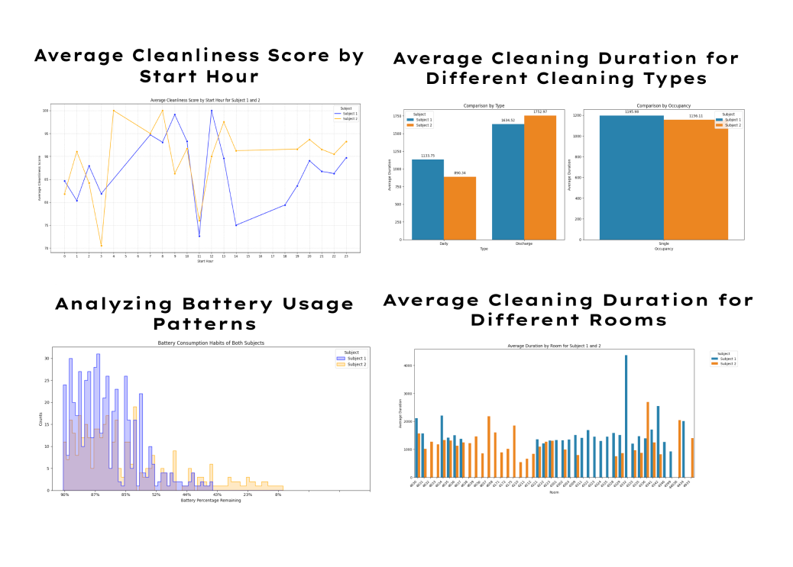

This research aimed to enhance hand hygiene and PPE compliance in hospital settings by incorporating gamification into cleaning protocols. We conducted a detailed analysis of in-hospital cleaning session data, including metrics such as session times, effort, and cleanliness outcomes. These insights provided a clear direction for effectively integrating gamification based on the user flow, ensuring that enhancements are both strategically aligned and practically implemented to boost engagement and compliance.

Ecolab UX Gamification Project
In motion: Hospital Room Cleaning App Redesign
Duration: 16 Weeks
Role: Product Designer, UX Researcher
Team: Olivia Huang, Cecilia Wang, Tia Yi, Shipeng Du, Anruo Li, Joyce Yan
Type: Mobile & wearable technology Application
Tools: Figma, Google Scholar, Miro
Project Overview:
Enhancing Hospital Cleaning Through Gamification
In response to the need for improved engagement and effectiveness in hospital cleaning, we aim to redesign Ecolab's existing mobile and watch applications. By applying gamification strategies, our goal is to incentivize high-quality cleaning results, critical in the prevention of hospital-acquired infections (HAI).
1. Define
Problem Statement
Hospital cleaning staff are in need of a streamlined, engaging, and reliable platform to enhance their efficiency and effectiveness in cleaning routines. The current tools must be optimized to support their tasks, motivate high performance, and ensure compliance with rigorous cleanliness standards to mitigate the risk of HAIs.
How Might We ?
How might we integrate gamification into Ecolab’s existing applications to motivate hospital cleaning staff, making routine tasks engaging and ensuring consistently high-quality outcomes?
2. Preliminary Research
To improve infection control in healthcare environments, This research was conducted to deepen our understanding of hospital settings and identify key factors that influence the effectiveness of personal protective equipment (PPE) usage and hand hygiene practices. The goal is to pinpoint the main challenges and obstacles that hinder proper compliance. By doing so, we aim to develop strategies that not only incentivize cleaning staff during their routine tasks but also enhance the monitoring of room cleaning results and maintain high standards of cleanliness to ensure the safety of both patients and healthcare workers.
Hand Hygiene Compliance
Educational Impact:
- Primary school graduates or lower: 29.8% wash hands before work, 54.3% after work.
- Higher education levels: 68.2% wash hands before work, 84.1% after work.
Insight: Higher educational levels correlate with better hand hygiene practices, suggesting a need for educational interventions tailored to lower education levels.
Barriers to PPE Compliance
Reasons for Non-compliance:
- Low perceived risk exposure: 67.8%
- Time constraints: 43.5%
- Interference with patient care: 12.2%
- Forgetting: 8.7%
Room Cleaning Effectiveness
Intervention Results:
- Enhanced cleaning reduced MRSA acquisition by 49% and VRE acquisition by 29%.
- Significantly reduced MRSA risk and moderately reduced VRE risk from prior occupants.
Conclusion: Enhanced cleaning protocols are crucial for reducing pathogen transmission in ICUs.
Key Insights
Redesign Objectives:
- Incentivize cleaning staff when doing everyday repetitive cleaning work.
- Better monitor room cleaning results.
- Maintain and promote cleaning staff's work quality.
3. Quantitative Research
Will update soon
Non-Disclosure of Design Details Due to Upcoming Product Launch and Intellectual Property Considerations